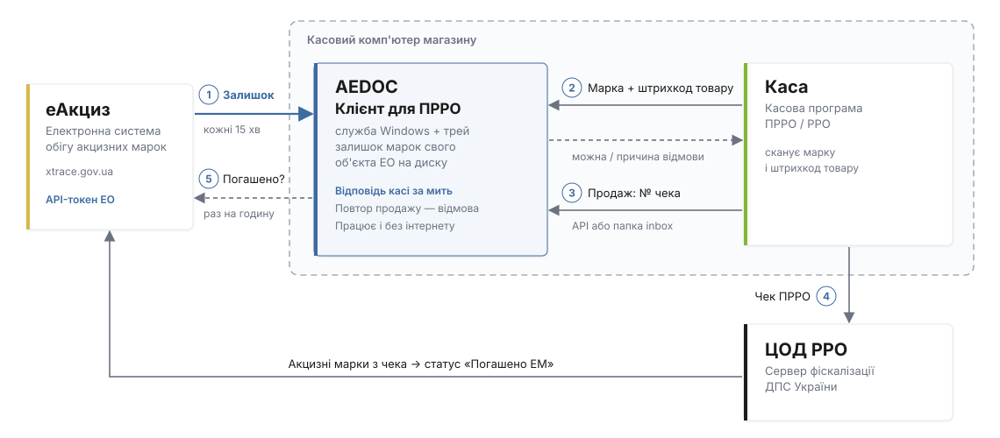
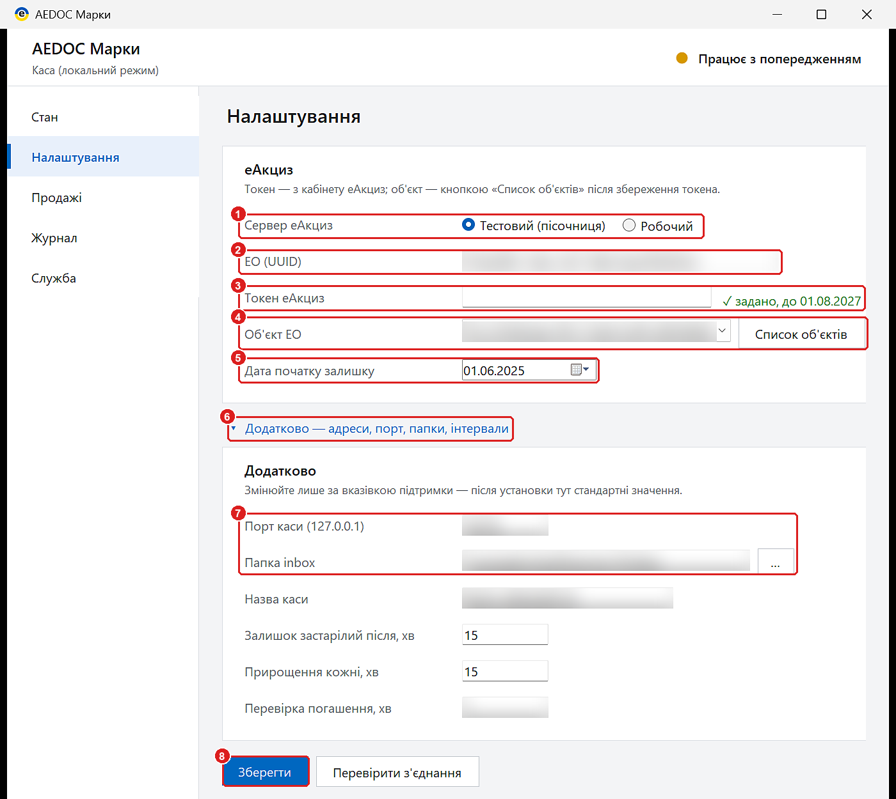
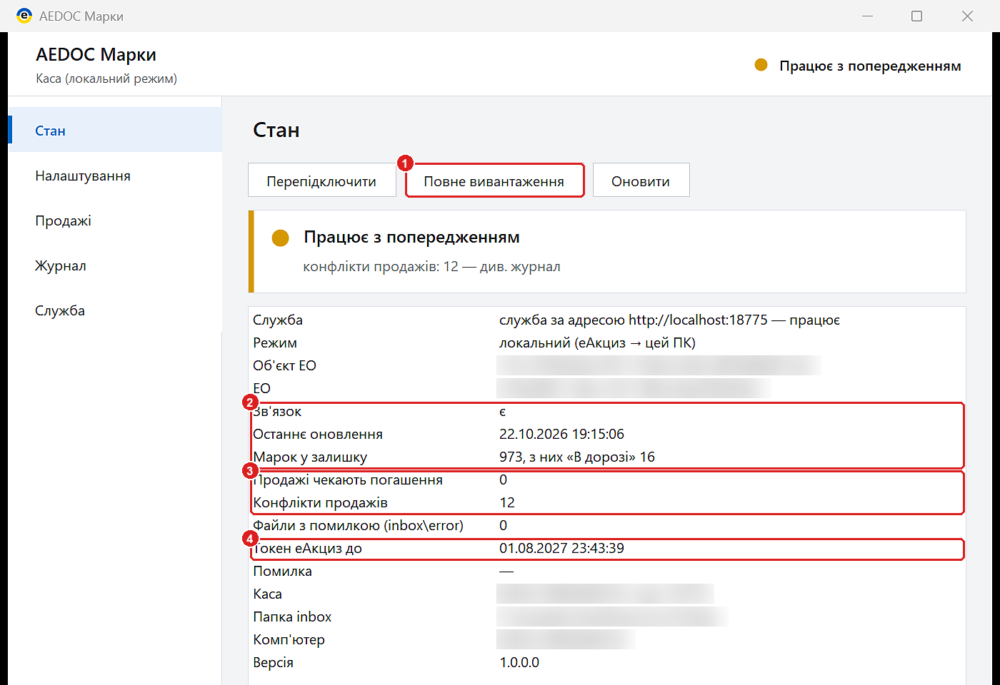

AEDOC Клієнт для ПРРО¶
AEDOC Клієнт для ПРРО — програма для магазину, де є лише каса ПРРО / РРО і немає облікової системи з AEDOC. Вона ставиться на касовий комп'ютер, сама бере з еАкциз залишок акцизних марок свого торгового об'єкта і за мить відповідає касі, чи можна продати марку з цим товаром.
Під час установки це режим «Каса (локальний режим)» установника AEDOC.
Для чого потрібен¶
Продаючи алкоголь чи тютюн, каса має бути впевнена, що акцизна марка:
- є на залишку саме цього торгового об'єкта в еАкциз;
- ще не продана — ні на цій касі, ні раніше;
- не «В дорозі» — тобто її вже прийняли в еАкциз;
- наклеєна на цей товар — штрихкод товару збігається з товаром марки.
Перевіряти це запитом до еАкциз під час кожного сканування — повільно й ненадійно: каса чекала б секунди, а без інтернету не могла б продавати зовсім. Клієнт для ПРРО тримає залишок марок на самому касовому комп'ютері й відповідає касі миттєво — і з інтернетом, і без нього.
Як працює¶

- Залишок з еАкциз. Під час першого запуску клієнт завантажує весь залишок акцизних марок об'єкта ЕО — від «Дати початку залишку» (кілька хвилин). Далі кожні 15 хвилин бере з еАкциз лише зміни: нові марки, прийняті переміщення, списання. Залишок зберігається на диску касового комп'ютера.
- Перевірка на касі. Касова програма сканує марку і штрихкод товару й передає їх клієнту. Відповідь — одразу: «можна продати» або причина відмови.
- Продаж. Після фіскалізації чека каса повідомляє клієнту про продаж — запитом до клієнта або файлом у папку
inbox. Продану марку клієнт більше не пропустить: повторна спроба отримає відмову з номером першого чека. - Чек ПРРО. Чек з акцизними марками каса, як і завжди, відправляє на сервер фіскалізації ДПС, звідти марки потрапляють в еАкциз.
- Контроль погашення. Раз на годину клієнт перевіряє в еАкциз, що марки проданих чеків отримали статус «Погашено ЕМ». Якщо марку не погашено за 72 години — це конфлікт продажу: він видно в треї і в журналі, марку треба перевірити в кабінеті еАкциз.
Що відповідає касі¶
| Відповідь | Що означає | Що робити |
|---|---|---|
| можна продати | марка на залишку, не продана, від цього товару | продавати |
| марки немає в залишку | марка не на цьому об'єкті або вже списана | не продавати, з'ясувати походження марки |
| вже продано | марку продано раніше (номер першого чека — у відповіді) | не продавати |
| «В дорозі» | марку ще не прийняли в еАкциз | прийняти в кабінеті еАкциз, потім продавати |
| марка від іншого товару | штрихкод товару не збігається з товаром марки | перевірити, ту чи марку відскановано |
Як саме каса показує відмову і чи дозволяє продаж усупереч їй — вирішує касова програма. Опис для розробників — API для касового ПЗ.
Без інтернету¶
Каса продовжує працювати за останнім завантаженим залишком; продажі записуються. Якщо оновити залишок не вдається довше 15 хвилин, клієнт додає до відповіді ознаку «дані застарілі» — касова програма може попередити касира. Коли зв'язок повернеться, клієнт сам підтягне зміни й перевірить погашення.
Клієнт для ПРРО не підписує документи ключем КЕП і не створює АЕД. Прийняти акцизні марки «В дорозі» чи виправити розбіжності — у кабінеті еАкциз. Одна каса — на одному комп'ютері.
Що потрібно¶
- Касовий комп'ютер з Windows 10 / 11 (.NET Framework 4.8) та інтернетом; права адміністратора для установки.
- API-токен еАкциз економічного оператора (як отримати) і ідентифікатор ЕО (UUID) — з кабінету еАкциз.
- Торговий об'єкт ЕО (магазин), де стоїть каса.
- Касова програма ПРРО / РРО з підтримкою перевірки марок AEDOC (API v2).
Встановити¶
- Запустіть установник
AEDOC-<версія>.msi(кнопка «Служба AEDOC» у верхній смузі довідки). - У вікні «Що встановлюємо на цей комп'ютер» оберіть «Каса (локальний режим)».
- Дочекайтеся завершення: служба запускається сама, у треї Windows з'являється значок AEDOC.
Налаштувати¶
Відкрийте значок AEDOC у треї → «Налаштування».

- «Сервер еАкциз» — «Робочий» для реальної роботи; «Тестовий (пісочниця)» — для перевірки на тестовому кабінеті.
- «ЕО (UUID)» — ідентифікатор економічного оператора з кабінету еАкциз.
- «Токен еАкциз» — API-токен ЕО. Після збереження поле очищається, поруч видно «задано, до <дата>»: токен зберігається зашифрованим і назад не показується.
- Натисніть «Зберегти», потім «Список об'єктів» і оберіть «Об'єкт ЕО» — магазин, де стоїть каса.
- «Дата початку залишку» — з якої дати завантажувати акцизні марки об'єкта (раніше за найстарішу марку на залишку).
- Блок «Додатково» розгорніть лише за потреби:
- «Порт каси (127.0.0.1)» (8766) — адреса, на яку звертається касова програма:
http://127.0.0.1:8766; «Папка inbox» — якщо касова програма передає продажі файлами. Інші поля — назва каси й інтервали — змінюйте лише за вказівкою підтримки. - «Зберегти» — клієнт перезапуститься з новими налаштуваннями й почне завантажувати залишок.
Адресу http://127.0.0.1:8766 (або папку inbox) передайте налаштувальнику касової програми. Токен для каси не потрібен: клієнт приймає запити лише з цього комп'ютера.
Перевірити¶
Сторінка «Стан» трея:

- «Повне вивантаження» — завантажити залишок заново (наприклад, після великого переміщення); каса тим часом працює за старим залишком.
- «Зв'язок» — є; «Останнє оновлення» — не довше 15 хвилин тому; «Марок у залишку» — скільки марок об'єкта, з них «В дорозі».
- «Продажі чекають погашення» — продані марки, ще не погашені в еАкциз (нормально — до кількох годин); «Конфлікти продажів» — не погашені за 72 години, перевірити в кабінеті еАкциз (на знімку — 12, тому стан «Працює з попередженням»).
- «Токен еАкциз до» — за 14 днів до закінчення трей попередить; новий токен — у «Налаштуваннях».
Зелений значок у треї — усе гаразд; жовтий — працює, але є на що звернути увагу (причина — під заголовком «Стан»); червоний — каса не отримує актуальних даних. Сторінки «Продажі» і «Журнал» — список продажів з їхнім станом і журнал роботи.
Інший магазин або інший ЕО
Якщо змінити в налаштуваннях об'єкт ЕО, ЕО або сервер, клієнт очистить старий залишок і завантажить новий. Поки завантаження не завершене, каса отримує відповідь «залишок ще не вивантажено» — чужі марки не продаються. Записані продажі зберігаються.
Оновлення, зміна режиму й видалення — як для всіх режимів: Встановлення і налаштування.